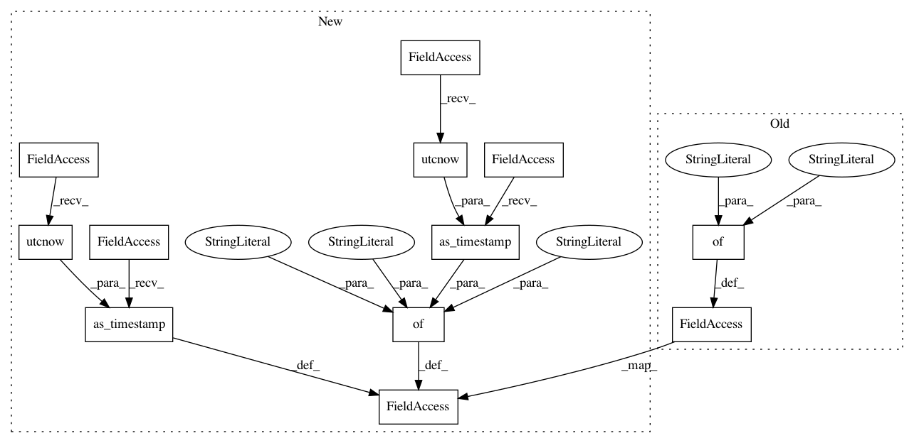

b00d0a12535b6f215e595d660b5c04ad22e68eb9,tests/components/device_tracker/test_unifi.py,,test_get_device_name,#,172
Before Change
fake_clients = [
{"mac": "123", "hostname": "foobar"},
{"mac": "234", "name": "Nice Name"},
{"mac": "456"},
]
ctrl.get_clients.return_value = fake_clients
scanner = unifi.UnifiScanner(ctrl)
assert scanner.get_device_name("123") == "foobar"
assert scanner.get_device_name("234") == "Nice Name"
After Change
fake_clients = [
{"mac": "123",
"hostname": "foobar",
"last_seen": dt_util.as_timestamp(dt_util.utcnow())},
{"mac": "234",
"name": "Nice Name",
"last_seen": dt_util.as_timestamp(dt_util.utcnow())},
{"mac": "456",
"last_seen": "1504786810"},
]
ctrl.get_clients.return_value = fake_clients
scanner = unifi.UnifiScanner(ctrl, DEFAULT_DETECTION_TIME)
assert scanner.get_device_name("123") == "foobar"
assert scanner.get_device_name("234") == "Nice Name"
In pattern: SUPERPATTERN
Frequency: 3
Non-data size: 12
Instances
Project Name: home-assistant/home-assistant
Commit Name: b00d0a12535b6f215e595d660b5c04ad22e68eb9
Time: 2017-10-13
Author: rbflurry@gmail.com
File Name: tests/components/device_tracker/test_unifi.py
Class Name:
Method Name: test_get_device_name
Project Name: home-assistant/home-assistant
Commit Name: b00d0a12535b6f215e595d660b5c04ad22e68eb9
Time: 2017-10-13
Author: rbflurry@gmail.com
File Name: tests/components/device_tracker/test_unifi.py
Class Name:
Method Name: test_scan_devices
Project Name: home-assistant/home-assistant
Commit Name: b00d0a12535b6f215e595d660b5c04ad22e68eb9
Time: 2017-10-13
Author: rbflurry@gmail.com
File Name: tests/components/device_tracker/test_unifi.py
Class Name:
Method Name: test_scanner_update